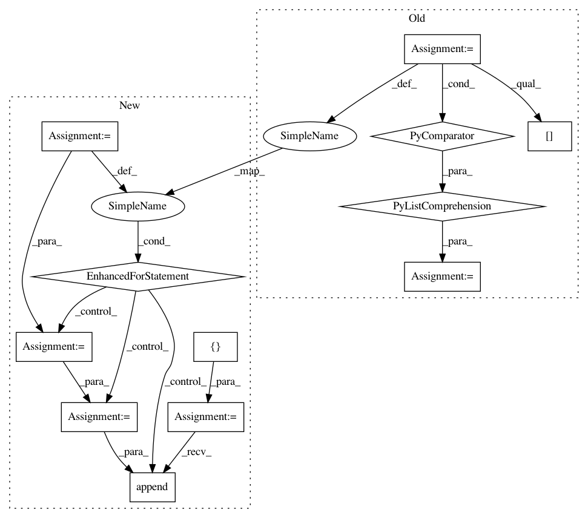

08633bd190028ad3cbe4c13b352b9efeae90f17e,tmtoolkit/topicmod/tm_gensim.py,MultiprocEvaluationWorkerGensim,fit_model,#MultiprocEvaluationWorkerGensim#Any#Any#Any#,70
Before Change
if metric == "cao_juan_2009":
res = metric_cao_juan_2009(model.state.get_lambda())
elif metric == "arun_2010":
doc_topic_distrib = np.array([list(zip(*doc_topic))[1]
for doc_topic in model.get_document_topics(corpus)])
assert doc_topic_distrib.shape == (data.shape[0], params["num_topics"])
res = metric_arun_2010(model.state.get_lambda(), doc_topic_distrib, data.sum(axis=1))
elif metric == "coherence_mimno_2011":
topic_word = model.state.get_lambda()
After Change
if metric == "cao_juan_2009":
res = metric_cao_juan_2009(model.state.get_lambda())
elif metric == "arun_2010":
doc_topic_list = []
for doc_topic in model.get_document_topics(corpus):
d = dict(doc_topic)
// Gensim will not output near-zero prob. topics, hence the "d.get()":
t = tuple(d.get(ind, 0.) for ind in range(model.num_topics))
doc_topic_list.append(t)
doc_topic_distrib = np.array(doc_topic_list)
assert doc_topic_distrib.shape == (data.shape[0], params["num_topics"])
res = metric_arun_2010(model.state.get_lambda(), doc_topic_distrib, data.sum(axis=1))
In pattern: SUPERPATTERN
Frequency: 3
Non-data size: 12
Instances
Project Name: WZBSocialScienceCenter/tmtoolkit
Commit Name: 08633bd190028ad3cbe4c13b352b9efeae90f17e
Time: 2019-03-22
Author: markus.konrad@wzb.eu
File Name: tmtoolkit/topicmod/tm_gensim.py
Class Name: MultiprocEvaluationWorkerGensim
Method Name: fit_model
Project Name: dmlc/gluon-cv
Commit Name: 0fd13ccd7e61c9186127993080240c07b7ad905e
Time: 2019-10-28
Author: yizhu59@gmail.com
File Name: docs/tutorials/action_recognition/dive_deep_ucf101.py
Class Name:
Method Name:
Project Name: keras-team/keras
Commit Name: b6d23b2e2dfc90480519ab52047006b1936fda02
Time: 2016-07-28
Author: jer.despraz@gmail.com
File Name: keras/backend/tensorflow_backend.py
Class Name:
Method Name: batch_set_value